Жаным, я сделал это не просто как сайт.
Я хотел оставить здесь то, что иногда не получается сказать словами.
20 июля 2024 года мы познакомились совершенно случайно. Ты написала мне просто от скуки — а я тогда даже представить не мог, что одно обычное сообщение однажды приведёт меня к тебе.
А потом настал 7 мая 2025 года — день, с которого началась уже наша история.
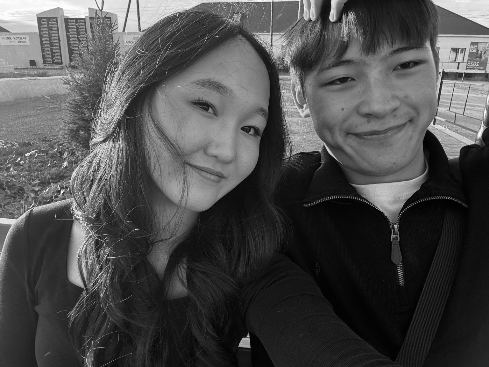
Помнишь, как мы гуляли, стесняясь друг друга? Это неловкое молчание, первое впечатление… Тогда мы ещё не знали, что дойдём так далеко.
Это был мой лучший день. Кездераай ❤️
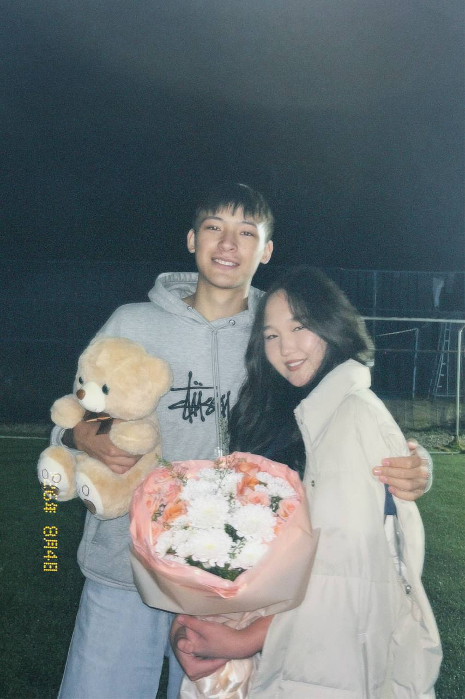
04.08.2026 — тот день был таким насыщенным. Помню твою улыбку, радость в глазах и твои первые цветы от меня.
В тот день я был счастлив видеть тебя такой счастливой, жан. ❤️
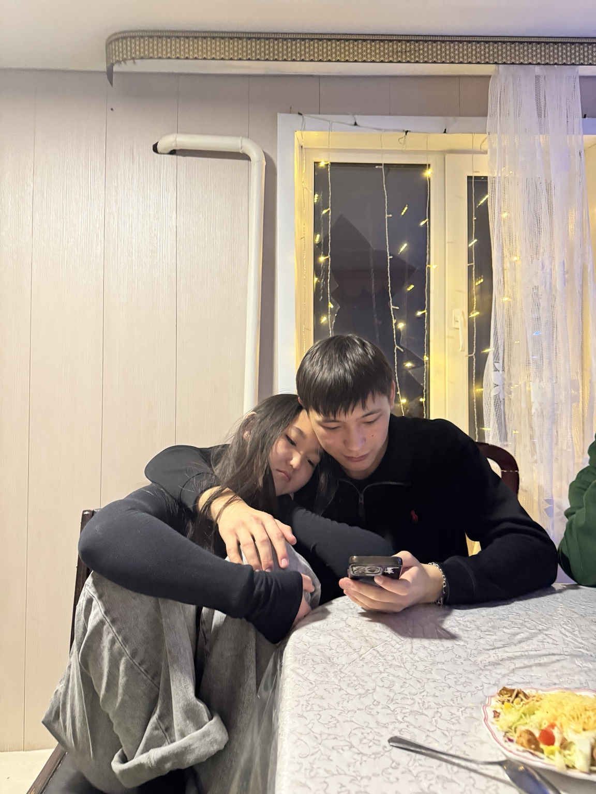
Иногда не нужен никакой особенный повод. Можно просто сидеть рядом, что-нибудь есть, разговаривать или молчать — и всё равно чувствовать себя счастливым.
С тобой даже обычный день становится воспоминанием. 🥰
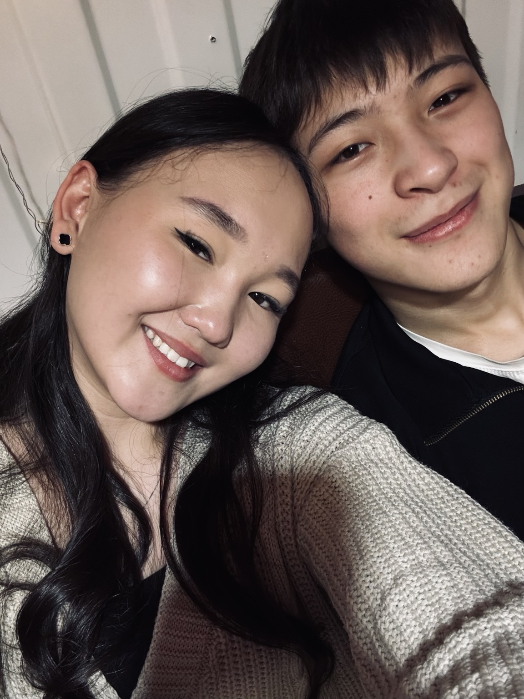
Первые открытки от тебя, любимая футболка с твоими губами… И тот день, который стал нашей последней встречей в 2025 году.
Такие мелочи я храню не из-за самих вещей. Я храню их из-за тебя. ❤️
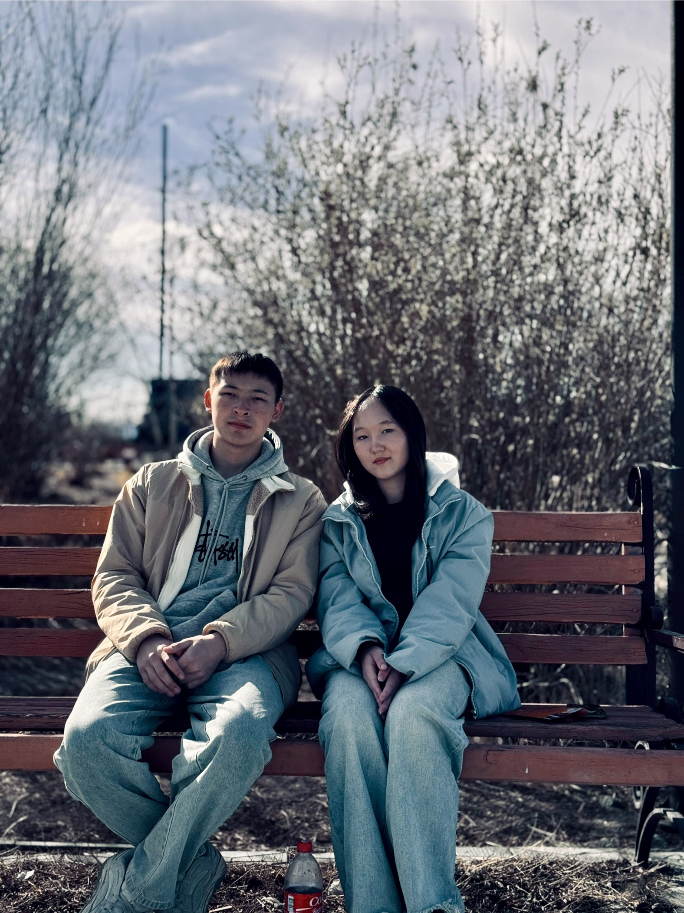
Когда мы собрались и весело проводили время. День, когда ты впервые вошла в мой дом, и та самая неловкая поездка с моей тётей 😅😂
Так скучаю по этому дню. Он навсегда останется одним из моих любимых. ❤️
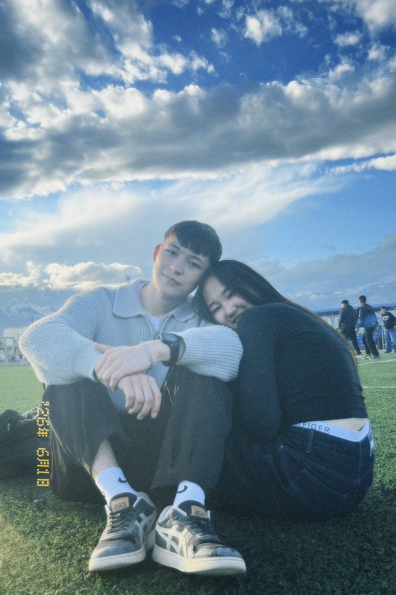
Этот день — столько смеха, красок и какой-то детской радости. Помню, как мы бегали и кидались красками, забывая обо всём вокруг 😂
А больше всего мне запомнилась твоя улыбка. Такая настоящая, счастливая…
Были же времена, а, жаным? 😂❤️
Кейде ең бақытты сәттер — ең қарапайым сәттер екен.
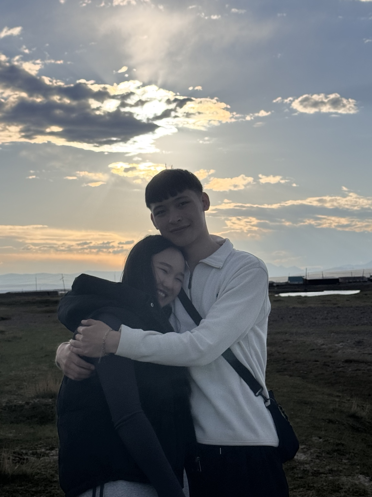
Помню, как мы с Алемгуль и Анэлей гуляли на мосту. Просто разговаривали, смеялись с какой-то полной фигни 😂
Особенно то, как мы угарали над Анэлей. Как вспомню — сразу лыбу давлю.
Мы просто были рядом, никуда не торопились и наслаждались моментом.
Себебі бақыт — үлкен нәрселерде емес.
Кейде бақыт — осындай қарапайым сәттерде ғана. ❤️
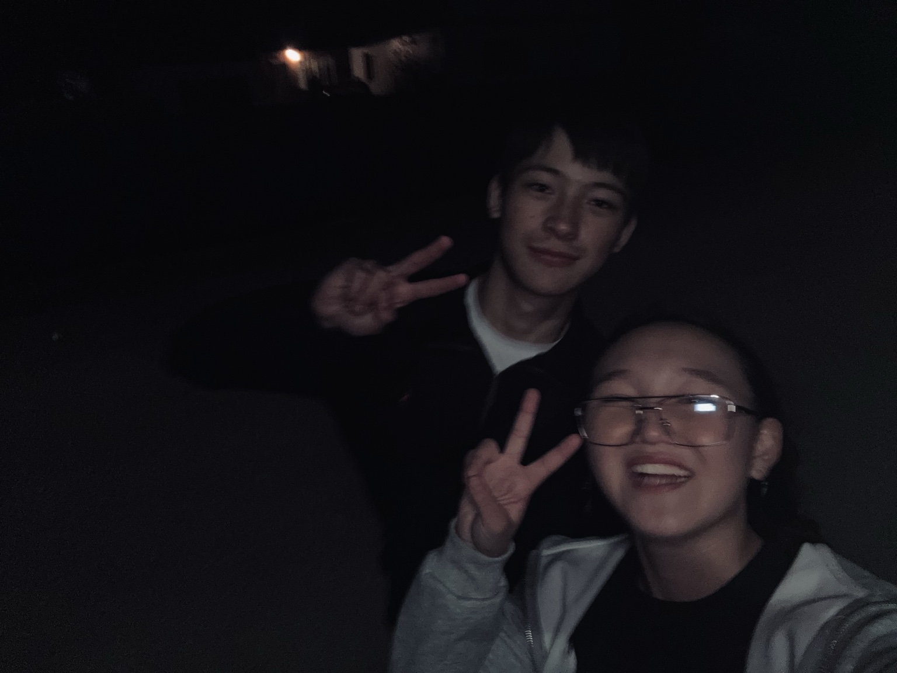
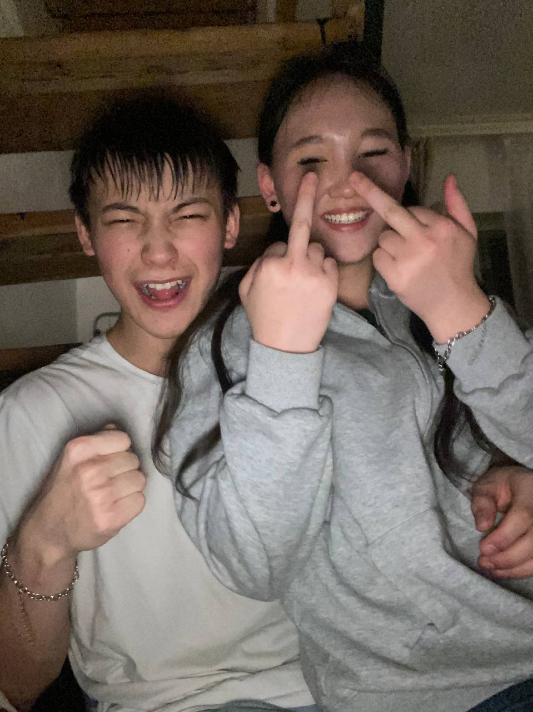
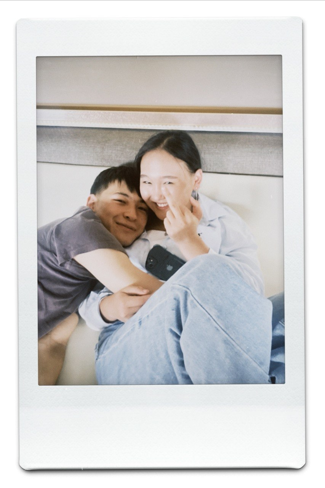
Иногда я смотрю на наши фотографии и понимаю, что самое ценное — даже не какие-то особенные события.
Вот эти наши обычные моменты: где мы смеёмся с какой-то фигни, дурачимся, строим рожицы, обнимаемся и просто сидим рядом.
На каждой фотографии мы немного разные. Но есть одна вещь, которая остаётся неизменной — мне хорошо, когда ты рядом.
Я хочу, чтобы таких фотографий у нас становилось только больше. Чтобы спустя много лет мы открывали их и говорили: «Помнишь этот день?.. А помнишь, как мы тогда смеялись?» 🥹❤️
Осындай сәттерді мен ешқашан ұмытқым келмейді, жаным.
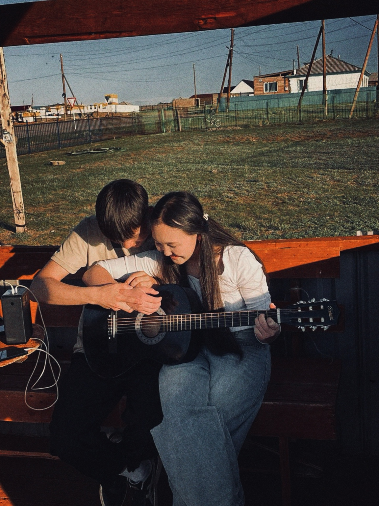
В этот день я снова учил тебя играть на гитаре. Смотрел, как ты стараешься, как у тебя постепенно получается всё лучше и лучше.
Мне нравилось не только учить тебя — мне нравилось наблюдать за тобой. За тем, как ты развиваешься, как не сдаёшься и идёшь дальше.
И знаешь, жаным… видеть твои успехи для меня гораздо важнее, чем свои.
Потому что когда у тебя что-то получается — я радуюсь так, будто это получилось у меня.
Мен сенің әр жетістігіңе шын жүрегіммен қуанамын. ❤️
Сенің қолыңнан бәрі келеді. Мен саған сенемін. ❤️
Я знаю, что у нас бывало разное. Мы ругались, иногда из-за мелочей копили обиды и делали друг другу больно. И я не хочу делать вид, будто этого не было.
Я хочу другое. Я хочу не обещать тебе красивыми словами, что всё будет идеально, а показывать это поступками. Хочу учиться слышать тебя, беречь тебя и не позволять старым обидам становиться сильнее того, что между нами есть.
Я хочу, чтобы у нас было больше моментов, над которыми мы смеёмся, больше встреч, прогулок и поездок, больше спокойствия и меньше причин расстраиваться друг на друга.
Ботам, я не знаю, каким будет каждый наш следующий день. Но я знаю, с кем хочу его проживать. С тобой.
Спасибо тебе за все моменты, за поддержку, за смех и за то, что ты есть в моей жизни. И если раньше я где-то не умел показать, насколько ты мне дорога, я хочу это исправлять.
Я не хочу возвращать всё «как раньше». Я хочу, чтобы дальше было лучше. Чтобы мы учились друг друга понимать, ценить и беречь.
Всё, что ты увидела здесь, — лишь маленькая часть нашей истории.
Я хочу, чтобы впереди у нас было ещё больше фотографий, поездок, смешных историй, долгих разговоров и тихих счастливых вечеров.
Мен сені жақсы көремін, Арука.
Сен менің жанымсың, ботам. ❤️